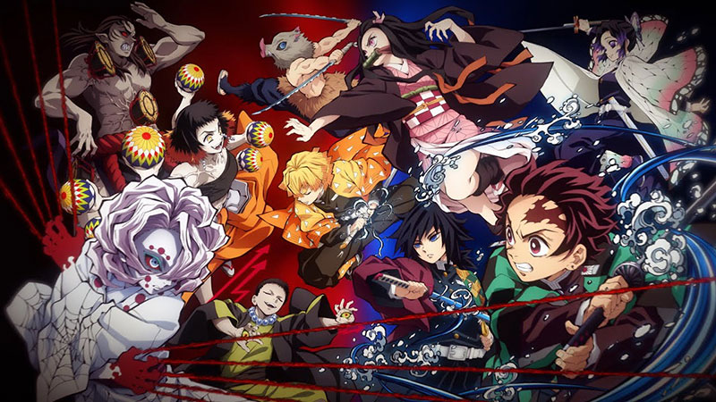

鬼滅の刃
あらすじ
時は大正。主人公・竈門炭治郎は亡き父親の跡を継ぎ、炭焼きをして家族の暮らしを支えていた。
炭治郎が家を空けたある日、家族は鬼に惨殺され、唯一生き残った妹・竈門禰󠄀豆子も鬼と化してしまう。
禰󠄀豆子に襲われかけた炭治郎を救ったのは冨岡義勇と名乗る剣士だった。義勇は禰󠄀豆子を「退治」しよう
とするが、兄妹の絆が確かに残っていることに気付き剣を収める。義勇の導きで「育手」鱗滝左近次の
元を訪れた炭治郎は、禰󠄀豆子を人間に戻す方法を求め、鬼を追うため剣術の修行に身を費やす。
2年後、炭治郎は命を賭けた最終関門である選別試験を経て、「鬼殺隊」に入隊する。
